Portfolio making reflection
Self-directed project on making professional brand and online presence
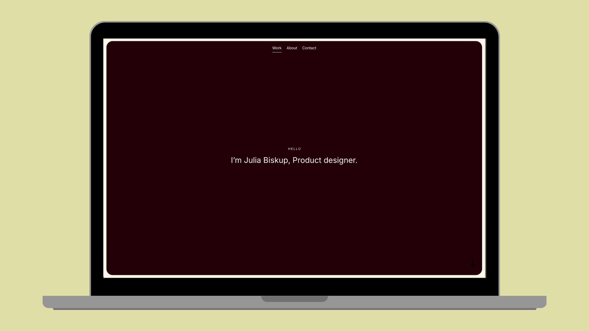
CONTENT
01. An introduction
02. A moodboard of portfolio inspiration
03. Sketches of ideas
04. Choice of tool
05. A design styleguide
06. Early designs and work-in-progress
07. Feedback from peers/industry
08. Final outcomes
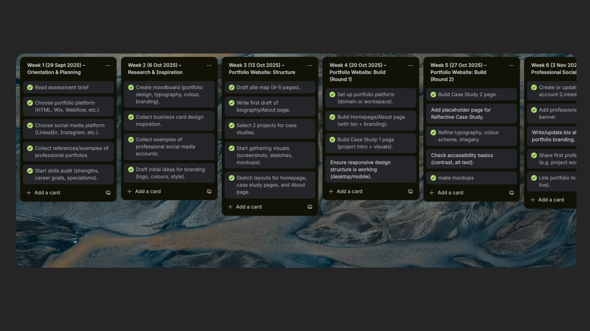
01. AN INTRODUCTION
Showcasing skills and career direction
As a product designer specialising in research, using tools like eye tracking to challenge assumptions. My graphic design background informs a strong UI focus on aesthetics, alongside a niche interest in information architecture.I am best suited to multifaceted roles like leadership, where communication and accountability shape my work and professional direction aiming to reflect my portfolio.
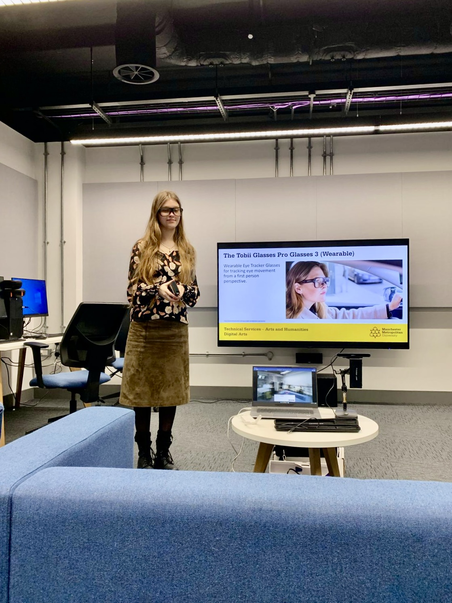
Exploring eye tracking  Discovering Information architecture with VR
Discovering Information architecture with VR
02. MOODBOARD
Portfolio inspiration
Through this aesthetic of a vivid autumn colour palette (Haller, 2019) , sans-serif font (Nielsen, 2012) , and organic shapes, I aimed to convey my branding identity with minimalism, representing a clean feel that targets employers. I aimed to focuse on the scannability (The Gestalt Principles, 2016) elements from my inspirations. These layouts informed my hierarchy by applying scale elements, spacing and contrast as strategies to support visual flow.
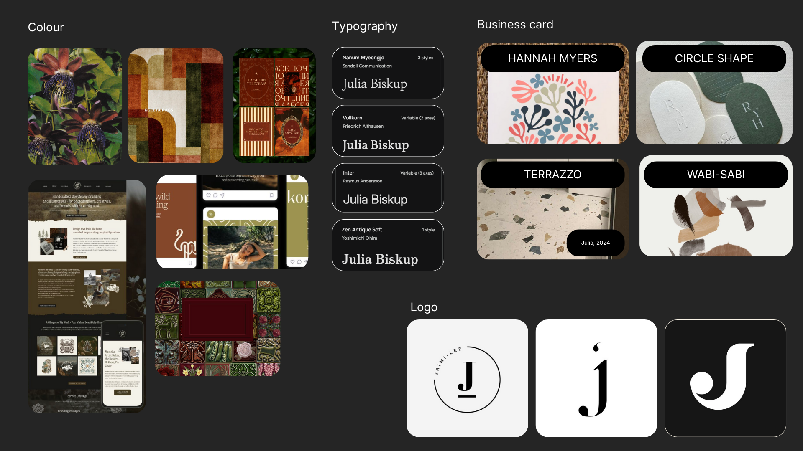
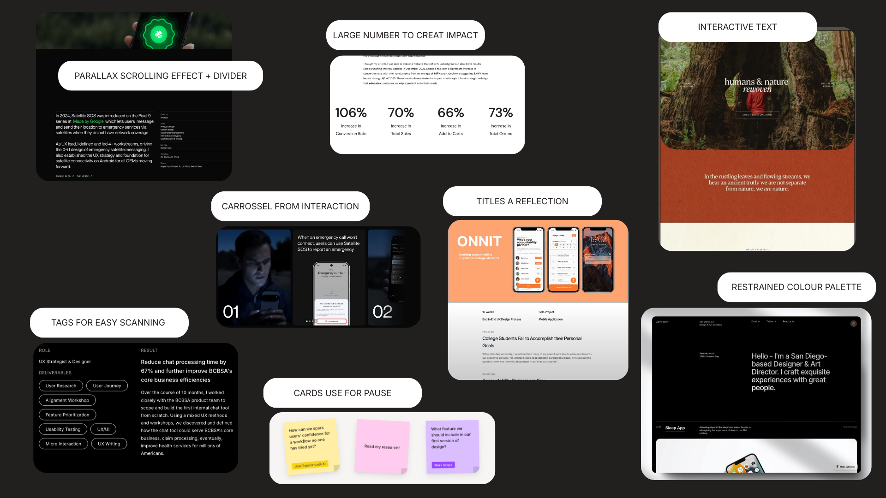
03. IDEAS
Sketches
This is my initial idea of my visual thinking that supports my minimal design approach (Fessenden, 2021). The information architecture is designed to make information findable, considering that 80% of recruiters say they spend 3 minutes (Wallace, 2023).
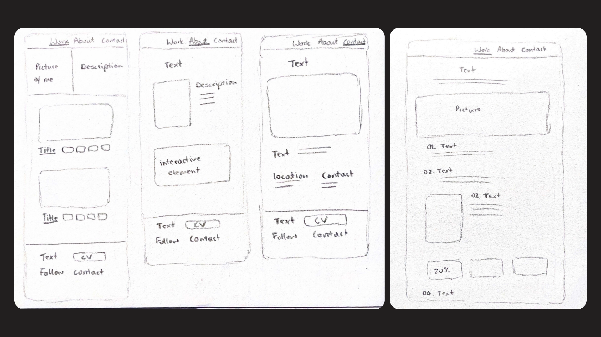
04. CHOICE OF TOOLS
HTLM & CSS template
I chose to use an HTML template to strengthen my employability and push my coding skills. However, given that it included a 'style guide', it allows for flexibility, which an alternative CMS platform (Romano, 2024) would provide. It offered a responsive design structure, which aligns with UX industry practices, something that would have reinforced time limitations to creating something from scratch myself.
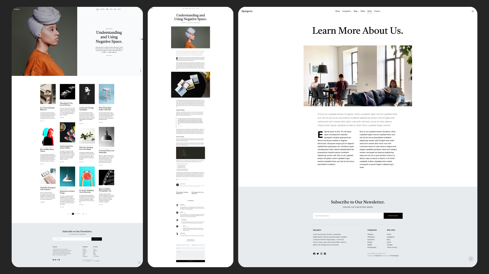
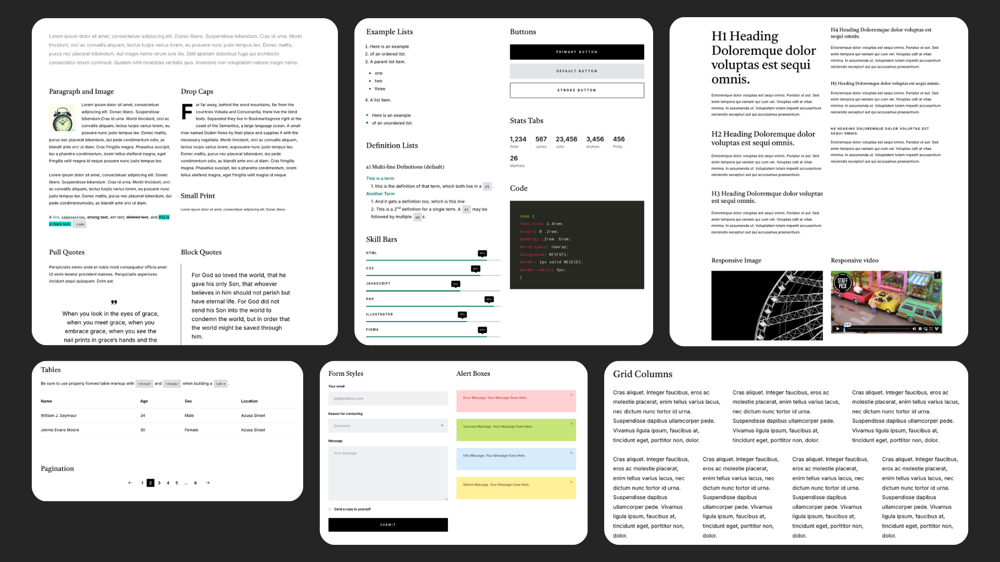
06. Early designs and work-in-progress
Design progress
I shifted from a original template four grid layout to a single grid (W3schools.com, 2025), shaped by CSS Flexbox(CSS-Tricks, 2013) because I wanted each project to have more whitespace (Mads Soegaard, 2015), creating a pause between sections remaining visually scannable.
I experimented with different background colours, and although the yellow worked temporarily, it created an overwhelming experience.
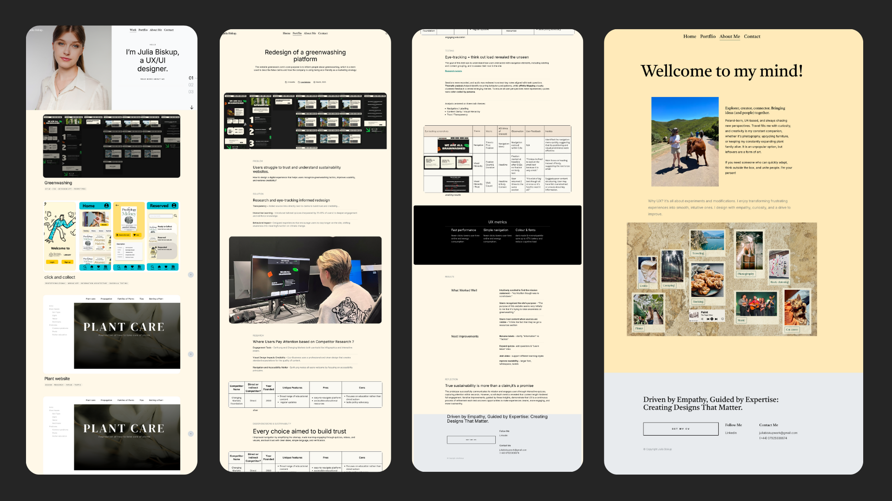
I have implemented adding mockup to create more professional tone using Rule of Three (UX Design Institute, 2023) to creat balance.
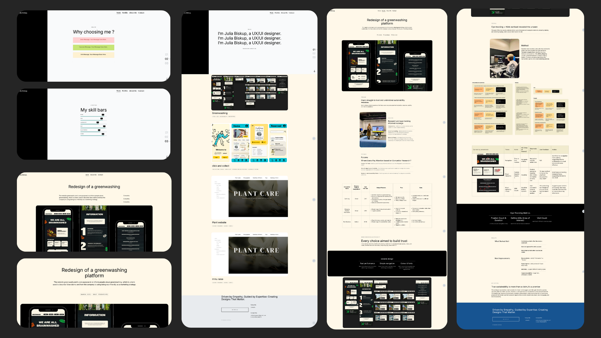
05. A design styleguide
Styleguide
Guided by my moodboard I chosen nature colours to welcome the viewer with comfort, while vivid tones cause a memorable identity. The logo designed as a letterform (Lenovo.com, 2021), exploring my style of playing with the boundary of balance between soft and sharp edges.
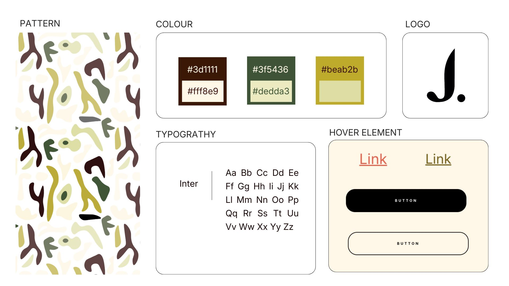
Business card
I chose to incorporate patterns using Adobe Illustrator to establish a distinctive visual identity, within my moodboard I looked into Terrazzo, Wabi-sabi, and the work of artist Hannah Myers, with their combination reflecting my personal approach to pattern. The design of the business card began with rounded edges to complement the organic shapes patterns, with the intention of induce the familiar form (Yablonski, 2017) of a smartphone, thereby creating a sense of comfort.


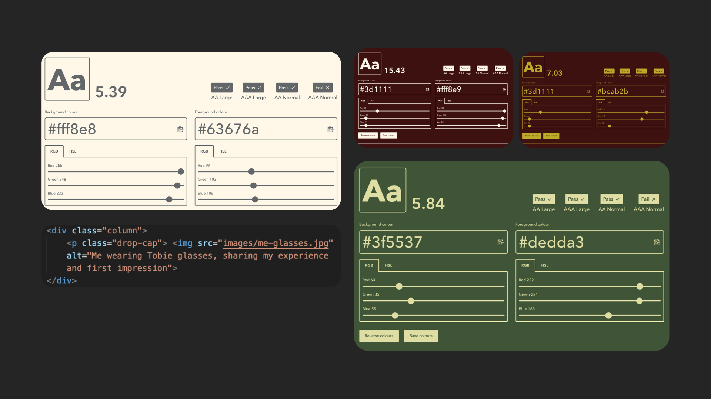
07. Anonymised feedback from peers/industry
Think out loud testing
I intentionally began with five participants (Nielsen, 2000) avoid repetition of the same findings, including a non-UX designer to identify usability issues from a real user’s perspective.
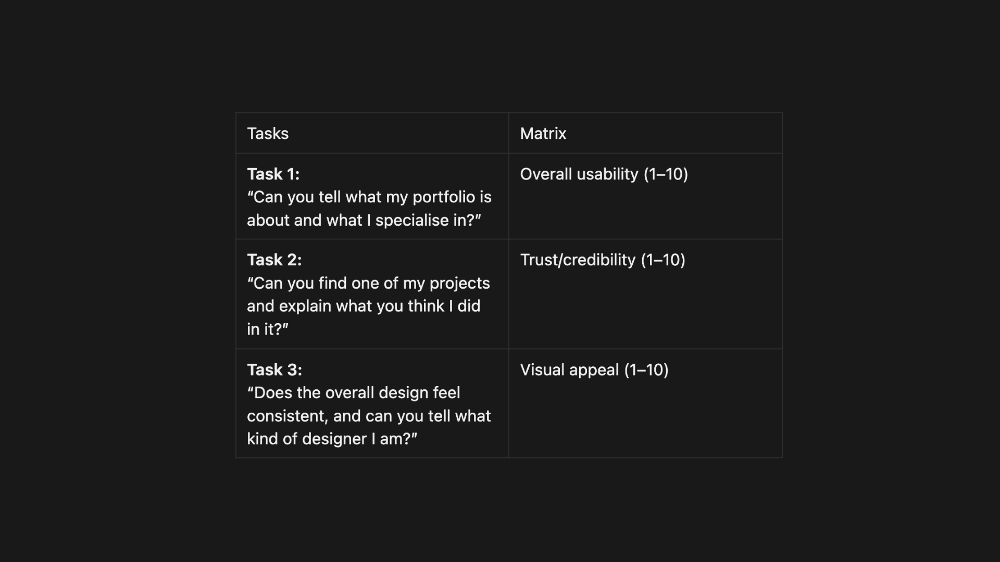
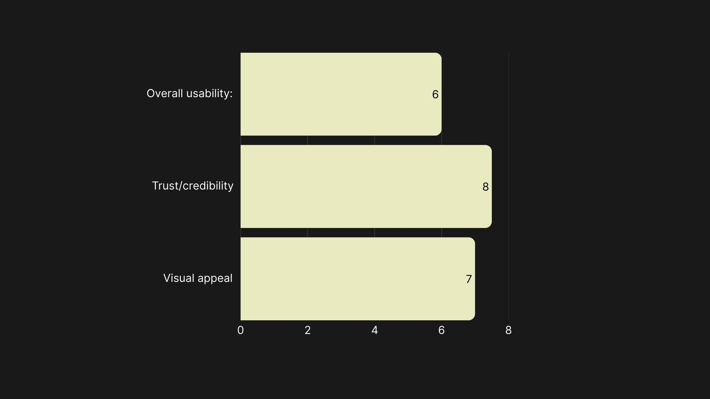
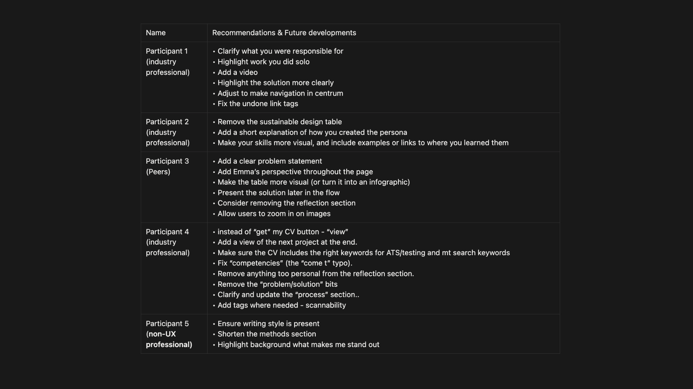
08. Final outcomes and changes after feedback
Changes after feedback
Gaining an understanding of early feedback showed a valuable lesson as delayed input led to extra work and multiple revisions, as much of the feedback involved cutting sections.
I received input on spelling mistakes and usability issues, like hover effects on tags. Additionally I was advised to add “next project” at the end each page and adjustments notes regarding my CV.
For future projects, I intend to incorporate video particularly in UI-focused areas, and add an overview section with highlighted background elements inspired by Yi-Hsuan Lin’s talk I attended, linking this directly to my feedback.
Next, I’ll change colours contrast to reduce eye strain and experiment with 3D elements on my homepage that align with UX trends (Uni.agency, 2025). With focus on improving SEO guidance (Moz, 2025) and website speed by image compress.

LinkedIn profile
I implemented my logo inspired by talk's with Venessa Bennett on my banner to maintain consistency across my online presence, while regularly adding posts to keep it active.
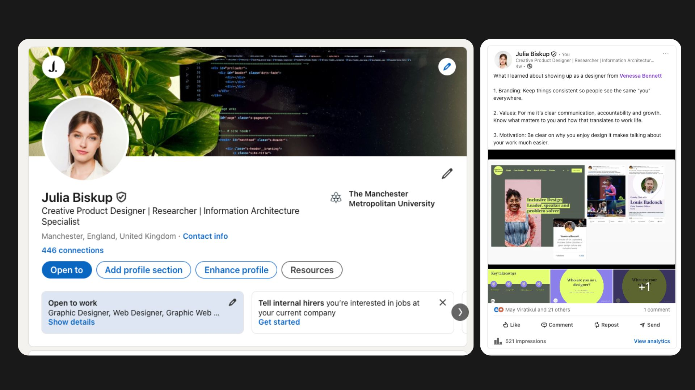